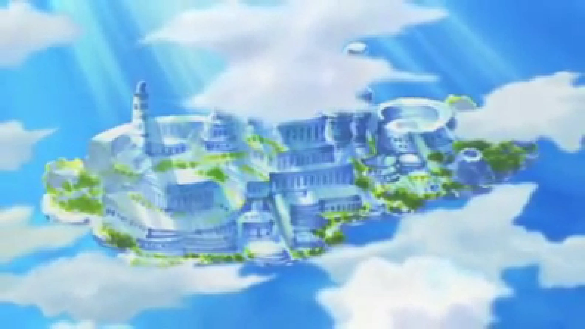
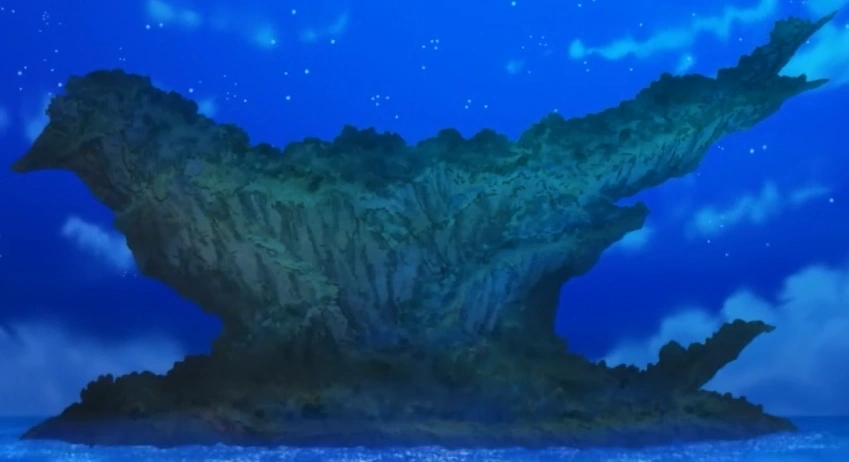

North Blue
North Blue (北の海ノースブルー, Nōsu Burū) est un océan du Monde de One Piece. North Blue, comme les trois autres océans cardinaux, se compose presque exclusivement de mers, avec quelques îles éparpillées et une frontière avec Red Line. Elle fut entièrement dominée par Vinsmoke Judge et son Germa 66.
Nous savons qu'il est le lieu de vie du cuisinier de l'Équipage du Chapeau de Paille, Vinsmoke Sanji, lorsqu'il était enfant, ainsi que le lieu de naissance du "Légendaire Menteur" Montblanc Noland, le premier habitant de la mer bleue à avoir découvert Skypiea. Trafalgar D. Water Law, X. Drake et Basil Hawkins, qui font partie des Onze Supernovae, sont originaires de North Blue. Les lunettes de visée qu'Usopp a achetées à Loguetown sont supposées être un modèle provenant de North Blue.
Information Historique
Noland:
L'une des histoires les plus célèbres de North Blue est l'histoire de Noland, un explorateur du Royaume de Luvneel. Il y a plus de 400 ans, Norland voyageait sur Grand Line et arriva à Jaya. Il vît une merveilleuse cité d'or. À son retour, il dit à tout le monde ce qu'il a vu. Le roi entendu son récit et lui demanda de l'emmener là-bas. Ils allèrent à Jaya, mais l'or n'était plus là. À son retour, le roi condamna à mort Noland pour lui avoir menti et il fut ainsi exécuté. Depuis ce jour, on dit aux enfants de North Blue de ne pas mentir, ou ils finiront comme Norland.
Conquête des Quatre Royaume:
Malgré la perte de leur ancien empire, le patriarche actuel de la Famille Vinsmoke maintient une ambition de rétablir le règne de la famille sur l'ensemble du North Blue. Ce désir est une cause directe de l'incident infâme connu sous le nom de Conquête des Quatre Royaume, où les rois de quatre Royaume du North Blue ont été assassinés par la Famille Vinsmoke.
Lieux se trouvant à North Blue
|  |  |
|||
|---|---|---|---|---|
| Royaume de Luvneel | Spider Miles | Royaume de Flevance | Île de Rubeck | Notice island |
|  | ||||
| Île de Swallow | Île de Minion | germa 66 (Anciennement) |